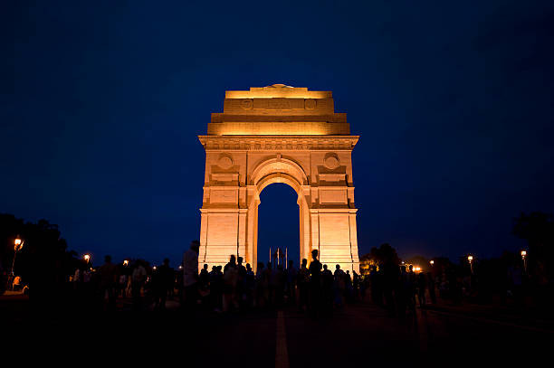
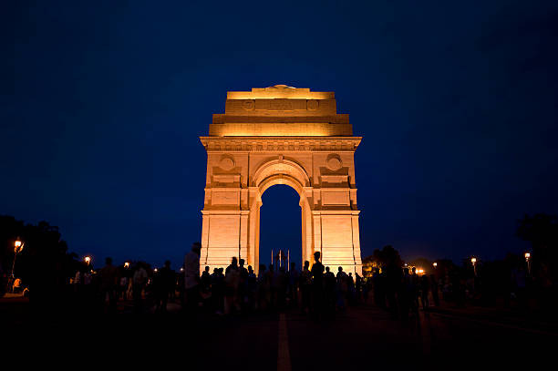

DAY TIME
- MYTHS
- Eternal Flame: There's a myth that an eternal flame burns under the India Gate, symbolizing the sacrifice of Indian soldiers. However, there is no eternal flame at India Gate. The Amar Jawan Jyoti, or Flame of the Immortal Soldier, is located at the India Gate War Memorial nearby.
- Names of Soldiers: It's often believed that the names of all Indian soldiers who lost their lives in World War I are inscribed on India Gate. However, India Gate primarily commemorates soldiers who fought and died in the First World War, but their names are not individually inscribed on the monument.
- British Victory Monument: Some myths suggest that India Gate was built by the British to celebrate their victory in World War I. However, India Gate was built as a memorial to honor the Indian soldiers who lost their lives during the war.
- Haunted Monument: Like many historical landmarks, there are myths about India Gate being haunted by the spirits of soldiers who died in battle. However, there's no substantial evidence to support these claims.
- Underground Tunnels: Some myths suggest that India Gate has secret underground tunnels or chambers. However, no such tunnels or chambers have been discovered or confirmed.
NIGHT TIME
 


- FACTS
- War Memorial: India Gate is a war memorial located in New Delhi, India, designed by Sir Edwin Lutyens. It commemorates the Indian soldiers who died during World War I and the Afghan Wars.
- Inscription: The names of approximately 13,300 servicemen are inscribed on the walls of India Gate, including soldiers from the Indian Army, British Indian Army, and other units who made the ultimate sacrifice.
- Amar Jawan Jyoti: Located near India Gate, the Amar Jawan Jyoti is an eternal flame that symbolizes the sacrifice of Indian soldiers in various conflicts since independence. It was added to the India Gate complex in 1971.
- Architectural Style: India Gate is constructed in the form of a triumphal arch, reminiscent of the Arc de Triomphe in Paris. It stands at a height of 42 meters and is made of red sandstone and granite.
- National Symbol: India Gate has become a significant national symbol, representing the bravery and sacrifice of Indian soldiers. It is a popular tourist attraction and a focal point for ceremonies and events commemorating India's military history.